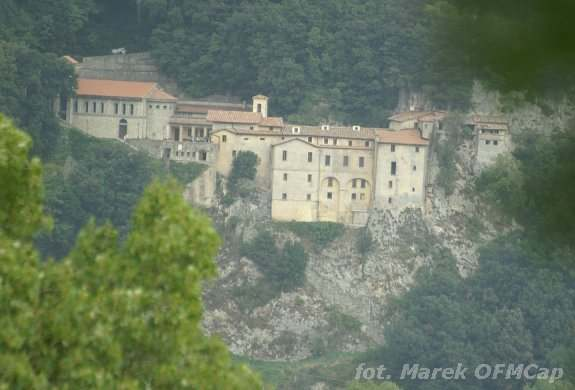

Gdy zbliżało się święto Narodzenia Pańskiego św. Franciszek powiedział do swojego przyjaciela Jana: "Jeśli chcesz, żebyśmy w Greccio obchodzili święta Pańskie, pośpiesz się i pilnie przygotuj wszystko, to ci powiem. Chcę bowiem dokonać pamiątki Dziecięcia, które narodziło się w Betlejem. Chcę naocznie pokazać Jego braki w niemowlęcych potrzebach, jak został położony w żłobie i jak złożony na sianie w towarzystwie wołu i osła."
"Przygotowano żłóbek, przyniesiono siano, przyprowadzono wołu i osła. Uczczono prostotę, wysławiono ubóstwo, podkreślono pokorę, i tak Greccio stało się jakby nowym Betlejem. Noc stała się widna jak dzień, rozkoszna dla ludzi i zwierząt. Przybyły rzesze ludzi, ciesząc się w nowy sposób z nowej tajemnicy." (Tomasz z Celano)
Na żłobie brat Leon odprawił uroczystą Mszę św., podczas której Franciszek, jako diakon ubrany w dalmatykę, śpiewał Ewangelię, a potem wygłosił zgromadzonym ludziom kazanie o narodzeniu ubogiego Króla.
Dziś można zwiedzać w Greccio kaplicę żłóbka z freskami upamietniającymi tamto wydarzenie, a także wystawę bardziej współczesnych szopek, wizje artystyczne są czasami bardzo zaskakujące:) (Na zdjęciu widać odbijające się w szybie witraże w nowym kościele.) Sam klasztor, podobnie jak Carceri, ma swój klimat, bardzo surowy, można choć trochę wczuć się w to, jak żyli pierwsi bracia. Tu także znajduje się cela św. Franciszka. Poza tym - warto wiedzieć, że to właśnie w Greccio powstał pierwszy kościół poświęcony Franciszkowi, wybudowany niedługo po jego kanonizacji.
